Track the wrist. Let the fingers learn.
Physics-based retargeting of human–object interaction demonstrations, without finger pose supervision: the body and wrist track the demonstration kinematically, and the fingers are trained by object-trajectory and contact rewards.
1 POSTECH 2 RLWRLD
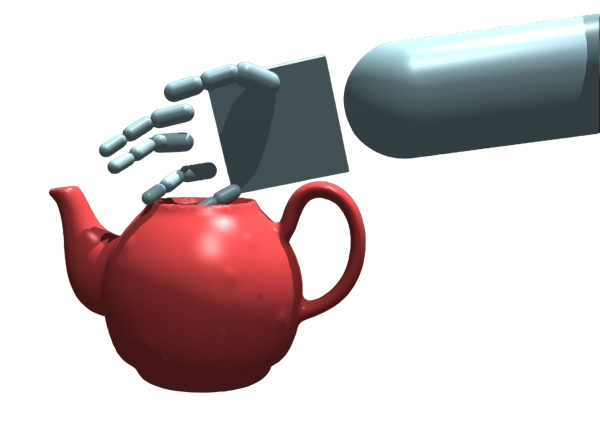
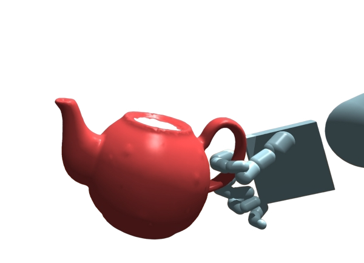
Retargeting human demonstrations to physics simulation is a long-standing problem. For body parts that do not touch the object — torso, legs, the reaching arm — replaying the recorded motion works. But the goal is not to reproduce poses; it is to reproduce the object's motion and the contacts that make manipulation succeed.
For hands, the two diverge. A position trajectory carries no contact force — the same finger pose can mean a firm grasp or none, and motion capture is imperfect — so tracking fingers precisely neither guarantees manipulation nor leaves room for the contact-rich motion it needs.
WristMimic instead supervises the hand at the wrist. Being largely contact-free, the wrist can be tracked kinematically like the body — yet it fixes the hand's global pose, and with it which grasps are reachable. Placed well, the fingers then learn from object-trajectory and contact rewards alone:
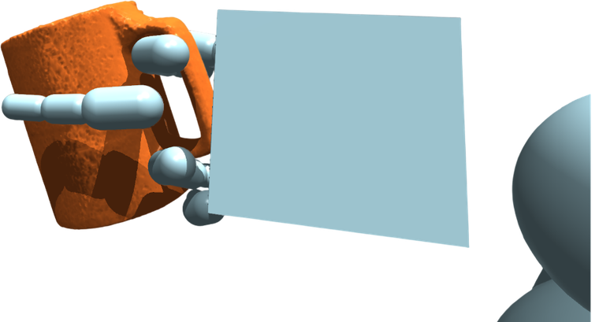
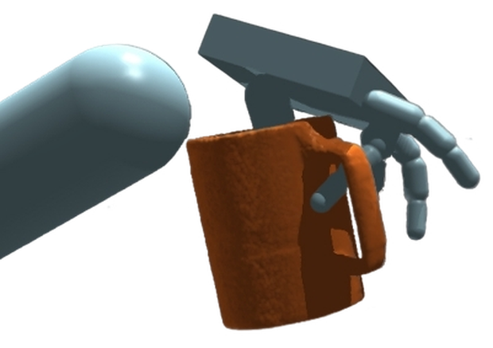
The wrist pose determines which grasp the fingers discover. Both rollouts use identical training objectives; only the reference wrist differs. Rendered in Isaac Gym7.
Kinematic pose targets for the 19 body joints and 2 wrists; object-trajectory and contact rewards for the 30 finger joints — fully actuated, never pose-supervised.
A contact window around first contact re-weights rewards (arm released, wrist kept tight) and applies phase-specific reset thresholds — ±7 cm / 0.2 rad during the grasping phase.
Performance comparable to or better than methods with full finger supervision3,4, and the same recipe trains hands of different sizes, joint lengths, and limits.
Captured demonstrations look precise when replayed — every joint and the object follow their recorded paths. But the object moves because its trajectory is scripted, not because the hand pushes it. Enable physics, so it moves only through contact, and the same replay fails to grasp: the signal manipulation depends on — contact force — is absent from position data.
The same captured kettle-grasping sequence under two replay conditions. Once the object must be moved through contact, position data alone cannot supply the forces that make the grasp hold.
WristMimic trains one policy per scene with PPO8. A single network drives all 51 joints of an SMPL-X6 humanoid, supervised by contact regime: contact-free joints track the reference motion, while the 30 finger joints get no pose objective and are shaped by object-pose tracking and contact alignment.
19 body joints + 2 wrists follow mocap pose targets.
30 finger joints — no pose targets, fully actuated.
Contact-free enough to track kinematically, yet it fixes the hand's global pose — and which grasps are reachable. Place the wrist well, and the fingers follow on their own.
Two wrist-specific mechanisms make this reliable, both inside a contact window [tc−10, tc+15] around first contact. Reward modulation frees the grasping arm's shoulder and elbow (w=0) to place the wrist, down-weights the other body joints (wred), and keeps the wrist fully weighted. Phase-specific resets then end any episode whose simulated wrist leaves the reference by more than ±15 cm / 0.5 rad (approach, stabilization) or ±7 cm / 0.2 rad (grasping).
Reset bound and reward weights across the contact window. The dashed ring is the allowed region for the simulated wrist, centered on the reference wrist at each frame; it tightens from ±15 cm to ±7 cm during grasping. Window parameters: tb=10, ta=15 frames, phase transitions at τ₁=−2 and τ₂=12; 30 Hz control.
We evaluate on 40 sequences — 20 ParaHome1, 20 OMOMO2 — with per-scene policies and 10,000 rollouts each (protocol below). WristMimic improves success rate and object pose accuracy over both baselines on both datasets: on OMOMO, object position error drops from 14.2 cm (InterMimic3) to 7.3 cm; on ParaHome's small handles and narrow contact regions, both baselines fall below 2% success while WristMimic reaches 83.3%.
| Method | OMOMO2 Succ % ↑ / Obj. pos err cm ↓ / Obj. rot err ° ↓ | ParaHome1 Succ % ↑ / Obj. pos err cm ↓ / Obj. rot err ° ↓ | Average Succ % ↑ / Obj. pos err cm ↓ / Obj. rot err ° ↓ |
|---|---|---|---|
| InterMimic3 | 86.6 / 14.2 / 22.2 | 0.1 / 83.5 / 73.3 | 43.3 / 48.8 / 47.7 |
| SkillMimicV24 | — | 1.3 / 72.1 / 80.3 | 1.3 / 72.1 / 80.3 |
| WristMimic (Ours) | 98.9 / 7.3 / 12.2 | 83.3 / 15.3 / 33.9 | 91.1 / 11.3 / 23.1 |
Per-scene policies, 20 sequences per dataset, 10,000 rollouts per scene. SkillMimicV2 requires bone-vector input, available only in ParaHome.
Decoupling alone fails: without wrist constraints, success is 0%. Phase-specific resets recover most of it; adding reward modulation performs best.
| Variant | Succ % ↑ | Obj. pos err cm ↓ | Obj. rot err ° ↓ |
|---|---|---|---|
| Decoupled, no wrist constraints | 0.0 | 56.4 | 49.7 |
| + reward weight modulation only | 0.0 | 50.3 | 43.6 |
| + phase-specific resets only | 67.5 | 28.8 | 56.9 |
| WristMimic (both) | 86.5 | 9.9 | 36.0 |
8 representative ParaHome1 sequences.
Dropping finger supervision is not just harmless — adding it back hurts. On the full 20-sequence ParaHome1 split, explicit finger-tracking guidance lowers success from 83.3% to 68.7%: with 45 DoF per hand, chasing finger poses pulls the policy into pose deviations and wrist misalignment, weakening the object-centric signal.
| Variant | Succ % ↑ | Obj. pos err cm ↓ | Obj. rot err ° ↓ |
|---|---|---|---|
| Decoupled, no wrist constraints | 0.0 | 46.5 | 42.9 |
| WristMimic (Ours) | 83.3 | 15.3 | 33.9 |
| WristMimic + finger-tracking guidance | 68.7 | 29.2 | 38.9 |
Full 20-sequence ParaHome1 split — the “Decoupled” row therefore differs from the 8-sequence ablation above. The finger-guidance variant adds explicit finger kinematic tracking to the state and reward on top of WristMimic.
The grasping-phase bound trades exploration against feasibility: too tight blocks exploration and pre-grasp recovery, too loose admits wrist states with no stable contact.
| Grasping-phase bound | Success % ↑ | Obj. pos. err cm ↓ | Obj. rot. err ° ↓ |
|---|---|---|---|
| 3.5 cm / 0.1 rad | 0.0 | 99.8 | 86.8 |
| 7 cm / 0.2 rad (default) | 96.3 | 9.5 | 18.1 |
| 15 cm / 0.5 rad | 17.5 | 78.3 | 72.3 |
Four representative ParaHome1 scenes.
With no finger trajectory prescribed, the recipe is not tied to one hand. We retrain three hand models — scene-specific SMPL-X6, InterMimic3, and OmniGrasp5 — differing in size, joint lengths, and limits. Grasping succeeds for all three; the InterMimic hand leads, its constrained joint ranges keeping exploration plausible where the others allow angles in [−π, π].
| Hand model | Succ % ↑ | Obj. pos err cm ↓ | Obj. rot err ° ↓ |
|---|---|---|---|
| InterMimic hand3 | 95.2 | 10.8 | 28.1 |
| OmniGrasp hand5 | 76.4 | 16.9 | 27.1 |
| Scene-specific SMPL-X hand6 | 75.8 | 20.1 | 39.6 |
10 ParaHome1 sequences — same wrist-guided training, no finger supervision for any hand.
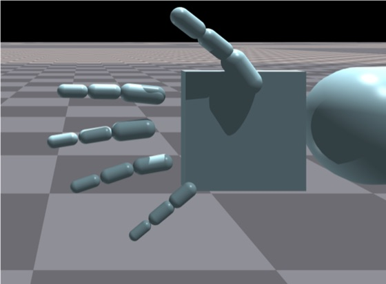
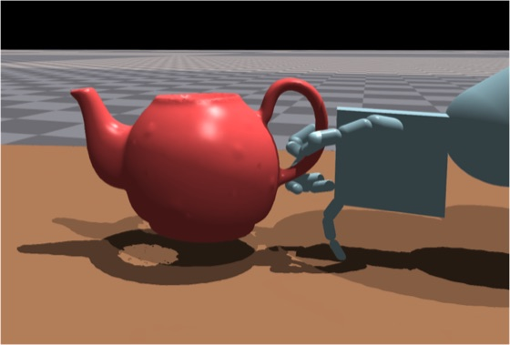
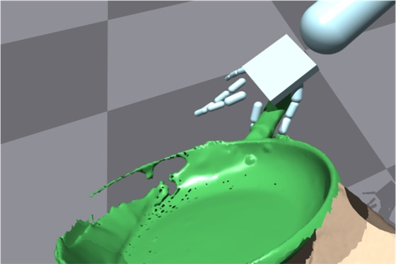
InterMimic3constrained joints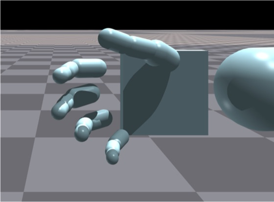
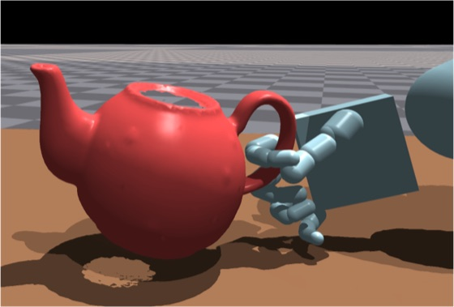
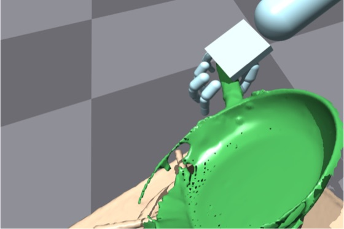
OmniGrasp5unconstrained joints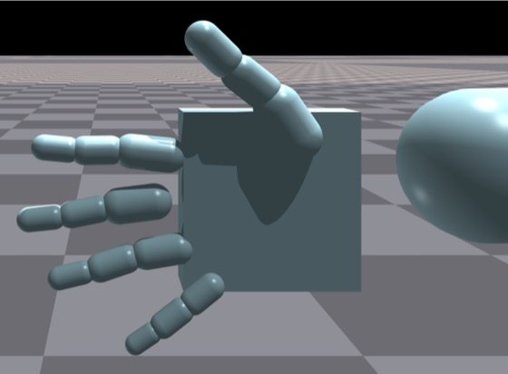
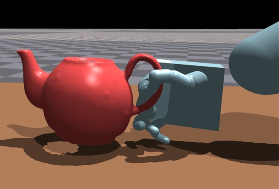
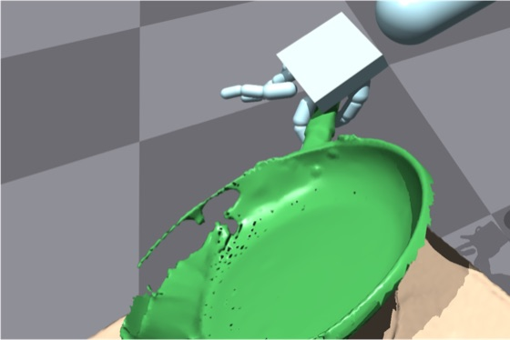
Each row: the hand model (left), then the grasps that emerge for it on a kettle and a pan. No finger reference exists for any hand; each discovers object-appropriate grasps from object-trajectory and contact rewards under the same wrist-guided training.
Interactions whose primary contact is not the hand involve coarse body-level support, not dexterous contact, and are handled by the standard whole-body objective — no wrist-specific design needed.
| Scene | Succ % ↑ | Obj. pos err cm ↓ | Obj. rot err ° ↓ |
|---|---|---|---|
| Large table (push with foot) | 99.9 | 9.9 | 10.6 |
| White chair (push with foot) | 99.7 | 8.0 | 6.8 |
| Sit on chair #1 | 97.2 | 9.8 | 5.0 |
| Sit on chair #2 | 99.8 | 8.5 | 6.1 |
Sequences whose primary contact is a non-hand body part, evaluated under the same protocol. Rows 1–2 push the object with a foot; rows 3–4 sit on a chair.
Representative sequences from ParaHome1 (household manipulation) and OMOMO2 (large-object interaction). In wrist-keypoint tracking clips, green marks the reference wrist target and red the simulated wrist. In the Book sequence the policy keeps both hands on the object where the human releases one — prioritizing stable manipulation over exact body-pose imitation.
WristMimic targets affordance-aware grasping and object transport. Fine-grained finger repositioning or in-hand reorientation needs signals beyond object pose and contact, and is out of scope here.
@inproceedings{yu2026wristmimic,
title = {WristMimic: Full-Body Humanoid Control with Wrist-Guided Manipulation},
author = {Yu, Wongyun and Kim, Youngwoon and Cho, Minsu},
booktitle = {European Conference on Computer Vision (ECCV)},
year = {2026}
}
This work was supported by Samsung Electronics (IO201208-07822-01) and by IITP grants funded by the Ministry of Science and ICT, Korea (RS-2022-II220113, RS-2022-II220290, RS-2024-00457882, RS-2019-II191906).